一
《童年》培养良好的阅读习惯
✍️ 作者与文学常识
高尔基（原名阿列克谢·马克西莫维奇·彼什科夫）：苏联无产阶级作家、社会主义现实主义文学奠基人，被列宁誉为“无产阶级艺术最杰出的代表”。自传体三部曲包括《童年》《在人间》《我的大学》。
📖 作品主要内容概述
《童年》是高尔基自传体三部曲的第一部。小说以第一人称“我”（阿廖沙）的视角，真实记录了阿廖沙从三岁到十岁在外祖父家的童年生活。阿廖沙幼年丧父，随母亲投奔外祖父家，在那里见证了舅舅们为争夺家产自相残杀、外祖父的自私残暴以及底层雇工被残酷虐待的黑暗现实；与此同时，慈祥善良的外祖母、“小茨冈”、优秀的房客“好事情”给予了他无私的温暖与启迪。作品展示了19世纪70至80年代俄国小市民阶层狭隘、自私、凶狠的丑恶嘴脸，展现了苦难中孕育的新生力量。
💡 主题思想与阅读策略
第一部分：随母亲回到外祖父家，目睹家庭争吵与暴行；第二部分：在苦难中结识善良的外祖母、小茨冈与“好事情”，汲取精神养分；第三部分：母亲再婚又丧生，外祖父彻底破产分家，阿廖沙被迫走向人间独立谋生。
| 人物 | 主要情节（对应讲义原著） | 人物形象评价 |
|---|---|---|
| 阿廖沙（高尔基的乳名） | ①母亲改嫁后随母亲来到外祖父家，经常挨外祖父的毒打，外祖母是他最亲密的朋友。 ②舅舅们为家产闹得不可开交甚至大打出手，阿廖沙在复杂的家庭环境中看清人性的善恶。 ③在学校受到刁难，与继父不和，又回到外祖父已破产的家。 ④将自己捡废品得来的钱塞给母亲，鼓励母亲离开继父；母亲死后，外祖父让他“走向人间”，开始独立谋生。 |
天真活泼、心地善良、富有正义感、坚强勇敢、能干、独立顽强、反抗暴虐。 |
|
🎞 四格连环画
阿廖沙（高尔基的乳名） · 典型情节画传（点击可放大）
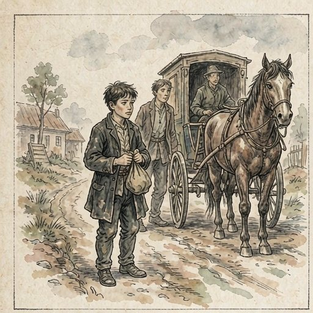 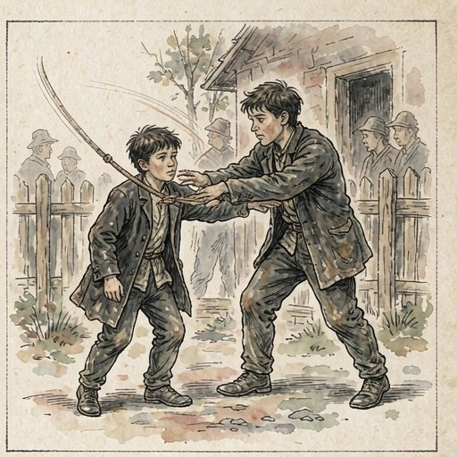 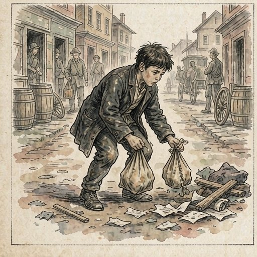 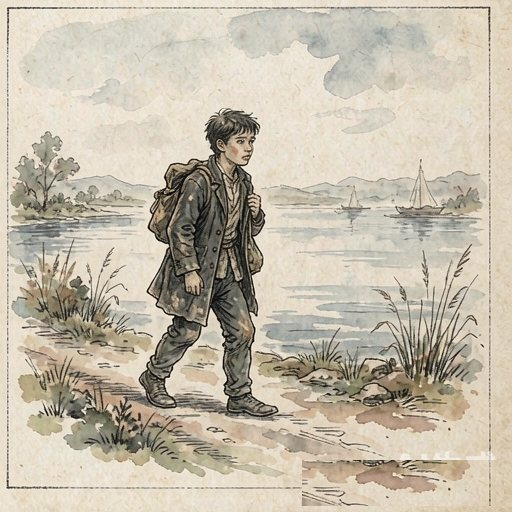 | ||
| 外祖母（阿库琳娜·伊万诺夫娜） | ①染坊硫酸盐起火时，外祖母不顾危险冲入火海抢出大桶硫酸盐，指挥救火。 ②擅长跳舞，会讲各种好听的神话民间故事，用无私的爱庇护阿廖沙，成为他的精神支柱。 ③宽容大度，私下放走被外祖父扣押殴打的酒馆女主人。 ④无论生活多么艰难困苦，始终虔诚善良，教导阿廖沙要正直、宽容待人。 ⑤默默忍受外祖父长期的暴躁打骂与苛刻对待，从未失去对生活的热爱与善意。 |
慈祥善良、聪明能干、热爱生活、坚韧宽容、富有同情心，是人间圣徒与阿廖沙苦难中的光明引路人。 |
|
🎞 四格连环画
外祖母（阿库琳娜·伊万诺夫娜） · 典型情节画传（点击可放大）
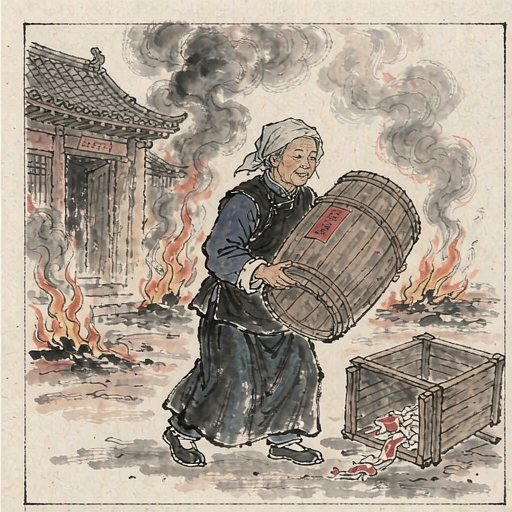 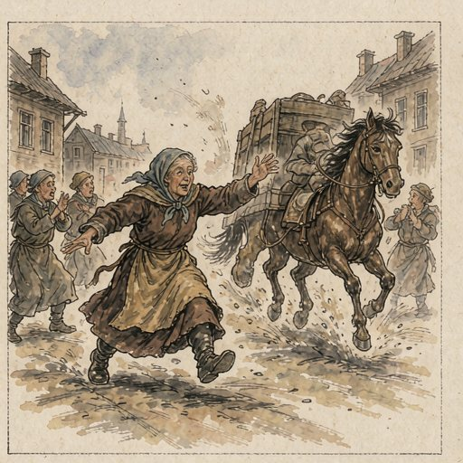 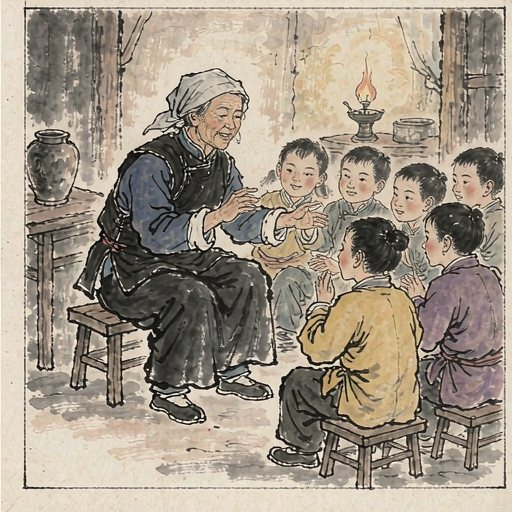 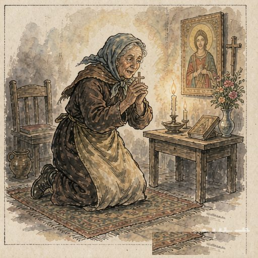 | ||
| 外祖父（卡希林） | ①凶狠残暴，因为阿廖沙染坏桌布将其毒打至失去知觉昏迷。 ②极度自私吝啬，开染坊破产后与外祖母分家，连几颗茶叶和每一文钱都要斤斤计较。 ③虽冷酷残忍，但痛打阿廖沙后也会在床边给阿廖沙讲自己年轻时当纤夫的苦难经历，残存一丝微弱的人性温情。 |
残暴凶狠、自私自利、专横跋扈、守财吝啬，但也是沙皇俄国专制黑暗社会被生活扭曲的底层小市民典型。 |
|
🎞 四格连环画
外祖父（卡希林） · 典型情节画传（点击可放大）
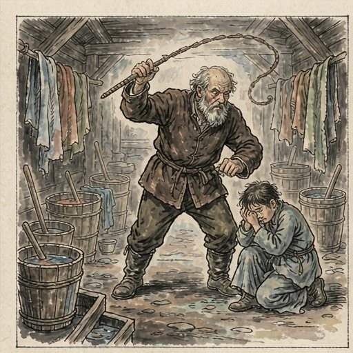 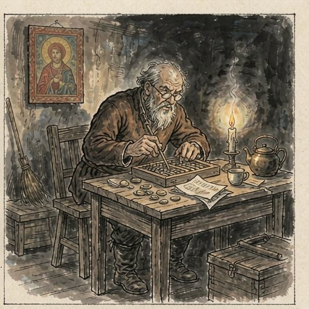 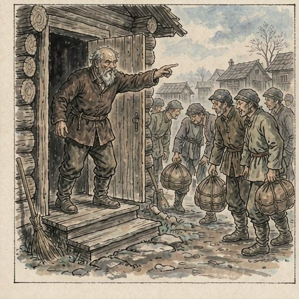 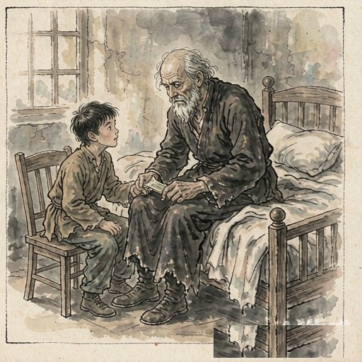 | ||
| “好事情” | ①外祖父家的房客，生活极其贫困，终日闭门搞科研与化学实验，行为被俗人视为古怪，受人嘲笑。 ②外祖父蔑视他想赶他走，外祖母怜悯他；他是阿廖沙童年遇到的第一个真正有学问的优秀人物，教阿廖沙用心观察生活、发现生活，做任何事都要讲求技巧。 |
献身科学、热爱真理、自尊自爱、孤独积极、引导阿廖沙走向知识殿堂的优秀启蒙者。 |
|
🎞 四格连环画
“好事情” · 典型情节画传（点击可放大）
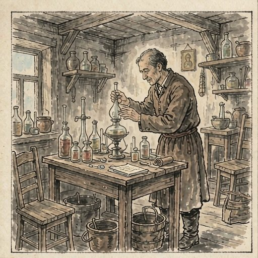 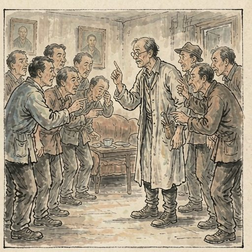 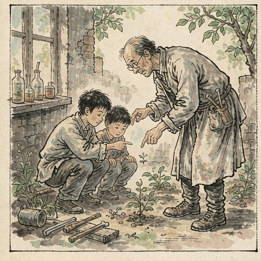 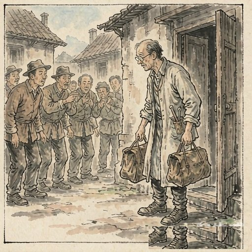 | ||
| 两个舅舅（米哈伊尔与雅科夫） | ①为了家产，两个人闹得不可开交，甚至大打出手，连阿廖沙的母亲也不放过。 ②想把原本给阿廖沙母亲的嫁妆重新分掉。 ③经常戏弄小茨冈和慈善的瞎眼工匠格里戈里。 ④自私阴险，挑唆小茨冈扛沉重大十字架，直接导致小茨冈被压死。 |
自私自利、残酷无情、毫无亲情、人性泯灭的市侩恶徒。 |
|
🎞 四格连环画
两个舅舅（米哈伊尔与雅科夫） · 典型情节画传（点击可放大）
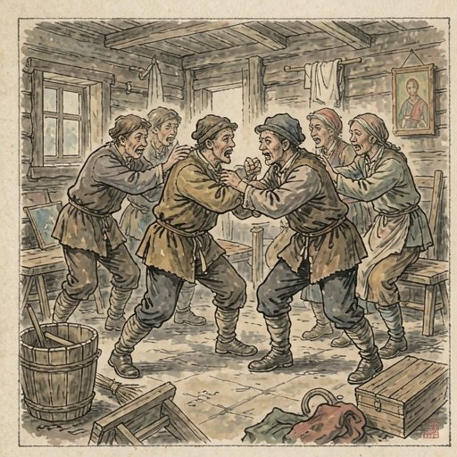 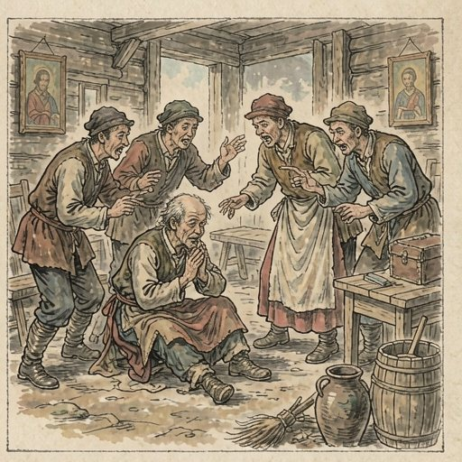 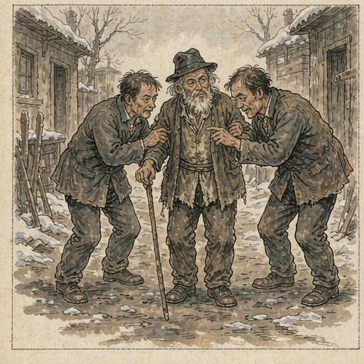 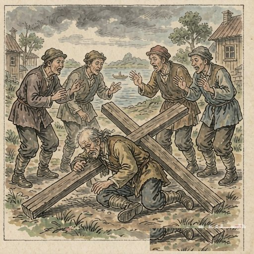 | ||
| 小茨冈（伊凡） | ①纯朴善良、热情乐观，在阿廖沙挨外祖父毒打时，勇敢伸出手臂替阿廖沙挡鞭子，手背被打得皮开肉绽。 ②买东西时趁机偷东西，外祖父表面上不希望这样实际暗中纵容，两个舅舅也默许欣赏，外祖母则无可奈何、生气。 ③争强好胜、喜欢逞能，在两个舅舅挑唆下扛大十字架上山，跌倒被沉重的十字架压死。 |
纯朴善良、乐观仗义、富有同情心，但沾染了市井小偷小摸陋习，争强好胜逞能，是黑暗社会中悲剧性的牺牲品。 |
|
🎞 四格连环画
小茨冈（伊凡） · 典型情节画传（点击可放大）
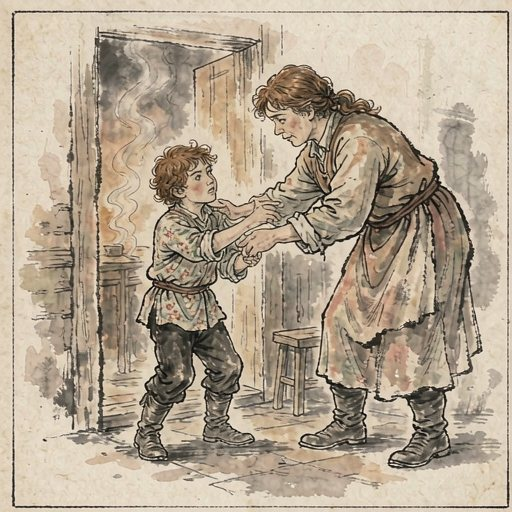 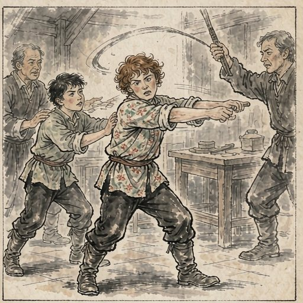 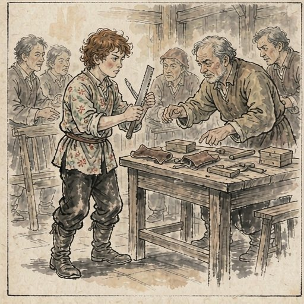 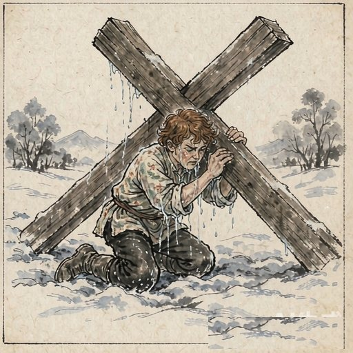 | ||